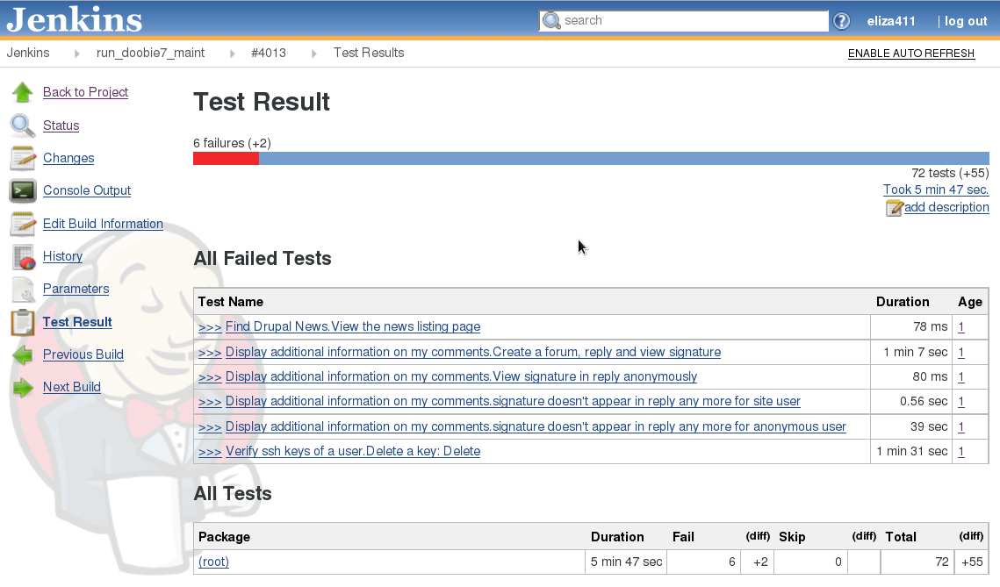

Selecting which Tests to Run
Group tests by:
- Feauture file name
- File name and scenario line number
- Directory or subdirectory
- Arbitrary tag
- Feature and scenario name
Based on Specific .feature File
- bin/behat features/byfile.feature
- All scenarios in the feature, no wildcards allowed
- bin/behat features/byfile.feature:21
- A scenario beginning on line 21. Supply the line number with Scenario: or Scenario Outline:, not the line with tags (if any)
Based on File Structure
- bin/behat
- Everything in yourproject/features, recursively
- bin/behat/subfolder
- Everything in that folder, recursively
You can’t run them with wildcards.
Based on Feature or Scenario Names
The JUnit output in Jenkins shows only name, not the file or line number, etc.
- bin/behat --name "Add a case study"
- All the scenarios in the feature file
- bin/behat --name "View case study guidelines"
- A specific scenario
- bin/behat --name "case"
- All features or scenarios with the word case in their title

Conventions
- @wip
- denotes a feature or scenario that is not finished
- @silence
- denotes a test that shouldn’t be included in Continuous Integration because it’s unreliable (or for any other reason)
{kind=link}